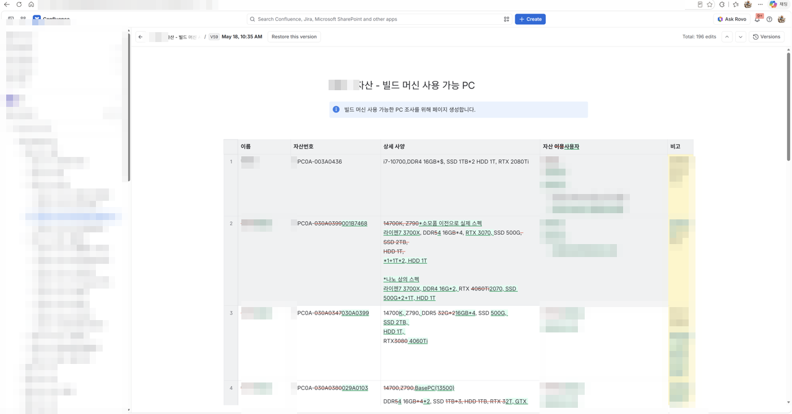
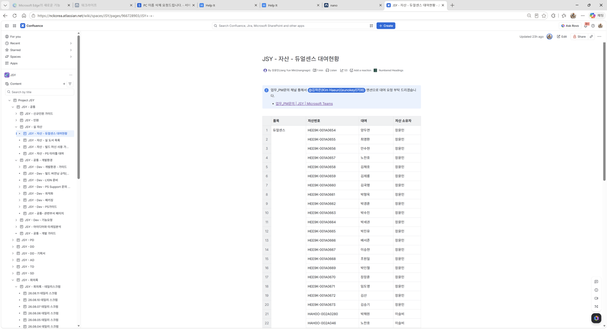
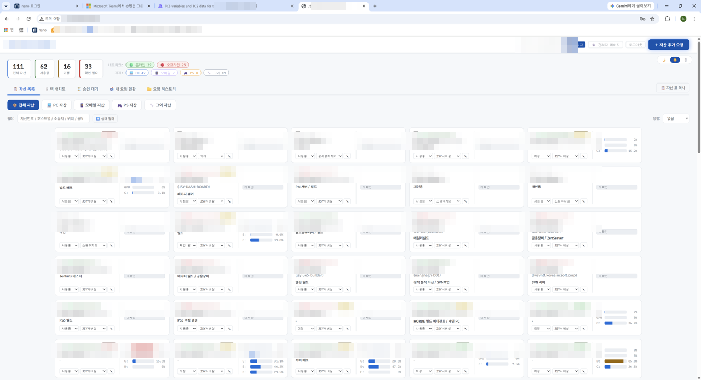
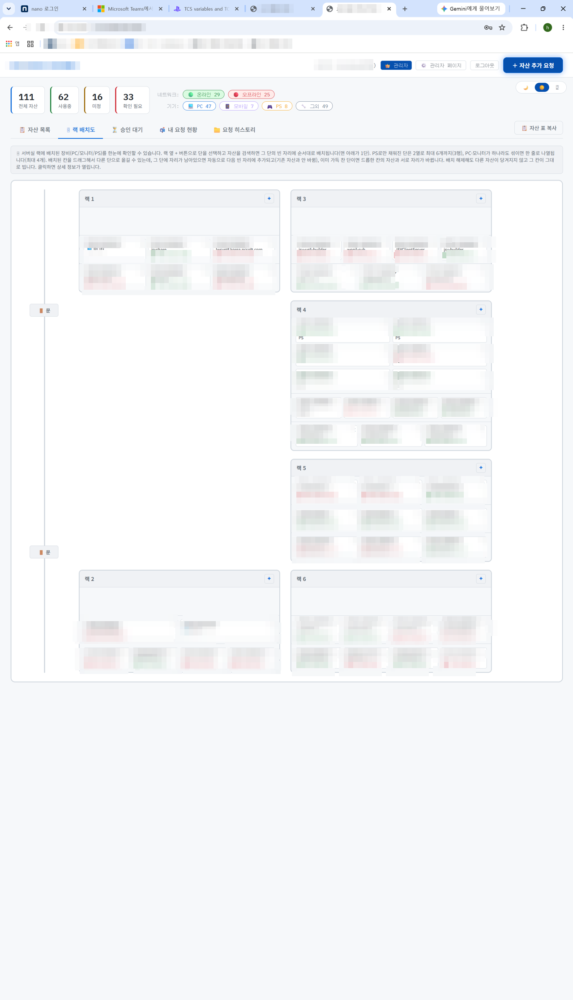
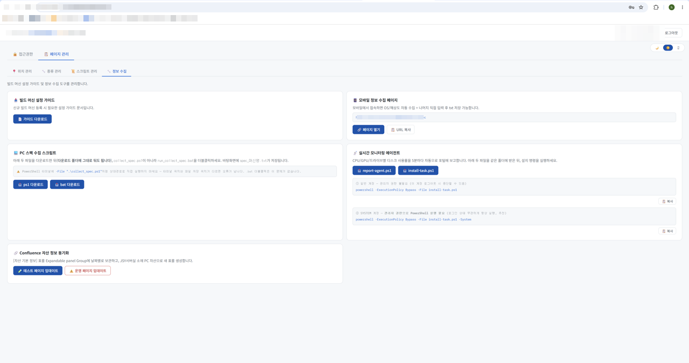
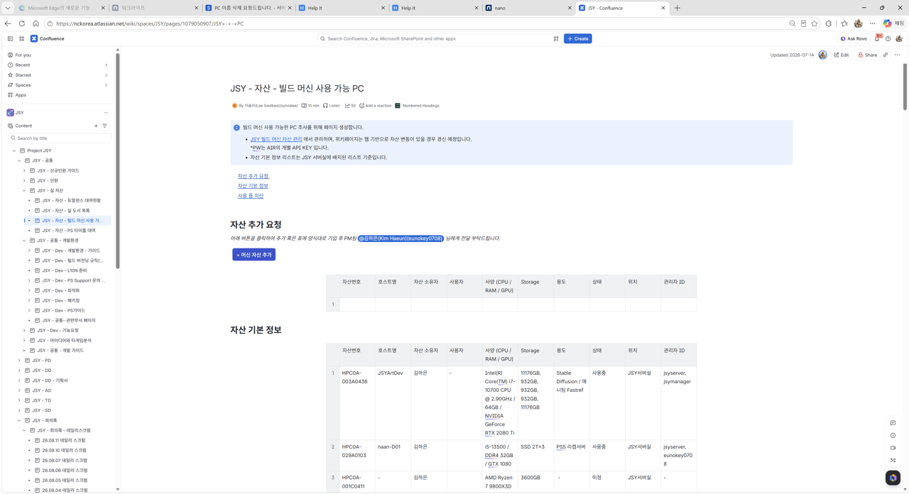

1
Problem · 문제 상황
111개 자산이 있는데, 어디 있는지 누가 쓰는지 알 수 없었다
Confluence에 자산 정보가 등록되어 있었지만 수기로 관리되다 보니 실제 상황과 달랐습니다. 자산의 위치·IP·사양·사용처가 불명확했고, 실제 대여자 정보가 불일치하는 경우도 많았습니다. 자산이 필요할 때 어디서 구해야 하는지, 지금 온라인인지조차 알 수 없었습니다.
Confluence 수기 관리의 한계
위치·IP·사양·사용처 정보가 부정확하고 실제 대여자 정보가 불일치했습니다
온라인 상태 파악 불가
어떤 머신이 지금 온라인인지, 어디서 접근 가능한지 실시간으로 알 수 없었습니다
자산 추가 요청 프로세스 없음
새 자산을 추가하거나 변경할 표준 프로세스가 없어 정보가 산발적으로 관리됐습니다
사양 정보 수집 수작업
각 머신의 CPU·RAM·GPU·Storage 정보를 일일이 직접 확인해야 했습니다

기존 Confluence 수기 관리 표. 196번 편집됐음에도 정보 불일치가 지속됐습니다.

두얼센스 대여현황도 수기 관리. 실제 대여자 확인이 필요할 때마다 PM에게 문의해야 했습니다.
2
Solution · 해결 방법
111개 자산을 웹 시스템으로 통합 관리
Node.js 기반 웹 애플리케이션으로 자산 현황을 통합 관리합니다. 로그인 기반 권한 관리, 실시간 온라인 상태 모니터링, 자산 추가 요청·승인 워크플로우, Confluence 자동 동기화까지 한 시스템에서 처리합니다.
실시간 온라인 상태
TCP 연결로 각 자산의 온라인/오프라인 상태와 응답 시간(ms)을 실시간 표시
승인 워크플로우
자산 추가 요청 → 관리자 승인/거절 → 자동 반영의 표준 프로세스 구축
랙 배치도 시각화
서버실 랙별 자산 배치를 드래그앤드롭으로 관리하고 시각적으로 확인
Confluence 자동 동기화
자산 정보 변경 시 Confluence 페이지에 자동 반영. 수기 업데이트 불필요
모바일 사양 수집
모바일로 접속해 OS/메상도 자동 수집 + 이미지 직접 입력 후 txt 저장
PowerShell 스크립트 관리
빌드 머신 사양 수집 스크립트를 관리자 페이지에서 배포·관리

메인 대시보드. 111개 전체 자산의 온라인(29)/오프라인(25) 상태, PC/모바일/PS별 분류를 한눈에 파악할 수 있습니다.

랙 배치도 탭. 서버실 랙 1~6별로 자산이 어디 배치되어 있는지 시각적으로 확인하고 드래그앤드롭으로 관리할 수 있습니다.

관리자 페이지. PC 스펙 수집 PowerShell 스크립트 배포, 모바일 정보 수집, Confluence 자산 정보 동기화를 한 곳에서 관리합니다.
3
Result · 결과
자산 현황이 실시간으로 보이기 시작했다
111개 자산의 위치·IP·사양·사용처·온라인 상태를 한 화면에서 확인할 수 있게 됐습니다. 자산 추가 요청은 표준 워크플로우로 처리되고, Confluence는 자동으로 최신 상태를 유지합니다.
111개
통합 자산 관리
PC·모바일·PS 등 전체 자산을 한 시스템에서 관리
실시간
온라인 상태 모니터링
TCP 연결 기반으로 각 자산의 온라인/오프라인 상태 즉시 확인
표준화
자산 추가 프로세스
요청→승인→반영 워크플로우로 자산 관리 프로세스 표준화
자동
Confluence 동기화
수기 업데이트 없이 자산 정보 변경 시 Confluence 자동 반영

Confluence 자동 동기화 결과. 자산 관리 시스템에서 변경된 정보가 Confluence 페이지에 자동 반영되어 수기 업데이트가 불필요해졌습니다.
Insight
"도구를 만들기 전에 가장 중요한 건 '왜 수기 관리가 실패하는가'를 이해하는 것입니다.
정보가 틀리는 건 사람이 게을러서가 아니라 업데이트 동선이 불편하기 때문입니다.
자동 동기화와 모바일 수집을 설계한 건 그 동선을 없애기 위해서였습니다."
정보가 틀리는 건 사람이 게을러서가 아니라 업데이트 동선이 불편하기 때문입니다.
자동 동기화와 모바일 수집을 설계한 건 그 동선을 없애기 위해서였습니다."